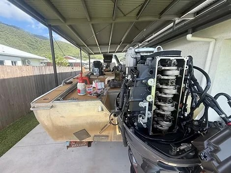
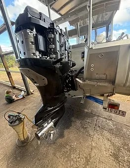
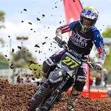
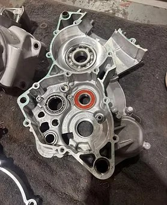
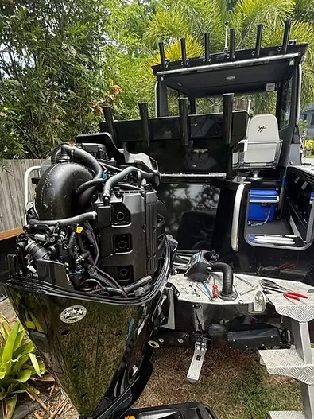

Workshop & mobile service
Mechanical services built around experience.
From routine servicing to difficult diagnostics and major repairs, Cairns & Cape Mechanical works across marine, PWC, motorcycles and machinery.
Marine & PWC
Servicing and repairs for outboards, boats and personal watercraft, with a fully equipped workshop for larger jobs and mobile service when getting the machine to the workshop isn't practical.
- Scheduled servicing
- Diagnostics & fault finding
- Outboard service & repairs
- Motor, gearbox & trim rebuilds
- Electrical work
- Fit-ups & installations
- Repowers
- Insurance repairs


Motorcycles & SXS
Servicing, diagnostics and repairs for motorcycles and side-by-sides, backed by OEM training across Yamaha, Can-Am, Kawasaki and Husqvarna.
- General servicing
- Diagnostics
- Suspension work
- Performance work
- Engine rebuilds
- Tyres & repairs




Need a bigger job?
Bring it to the workshop.
For larger repairs and jobs that need more time, the Babinda workshop is fully equipped to get the machine apart, diagnose it properly and put it back together.